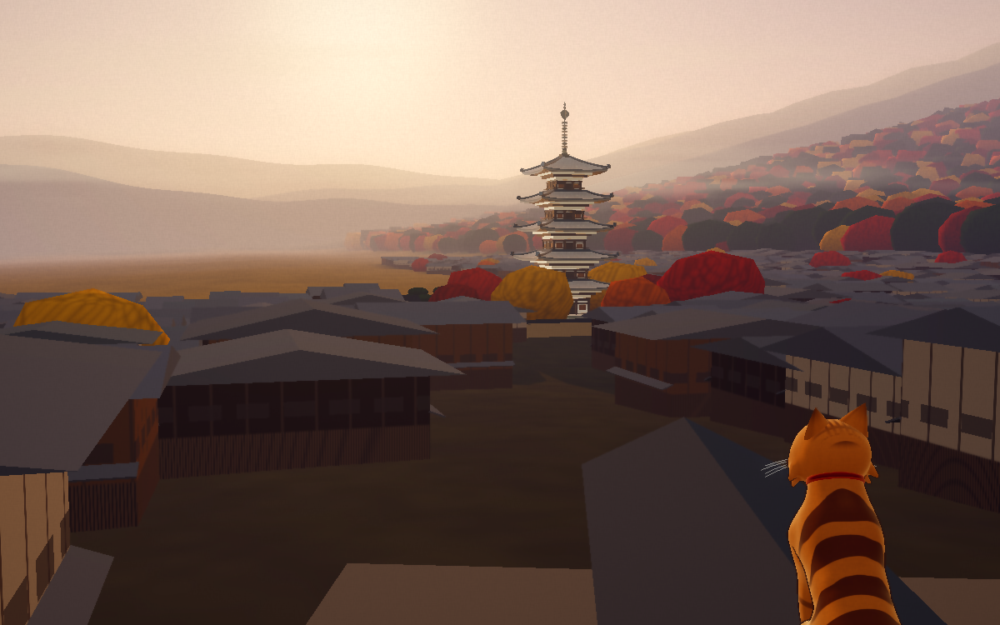

Updated · Lab 08 · 五重塔
Stand back. Squint.
A pagoda built from measured proportions: walk from its foot to the far hills while it trades detail tiers, ring its twenty bells, shake it to watch the storeys dance round the heart pillar, raise it from the stones. Sixty-five live specimens, each shelf opening with the tower in our game. New: every storey now has a solid plaster core behind its brackets, so no sky shows through under the eaves.